There's an official Fallout TV show prop. It's hackable.
OK, we're doing something a little different with this one. But first the preamble.
The Preamble
19/03/2025
So I haven't cosplayed properly in a while. I did it prettyu regularly in 2023, but 2024 was a nadir for me menty h and cosplay, with its ill-fitting, itchy fabrics that are not designed with trans people in mind, was not gonna help that. I didn't go to many cons, those I did I avoided being in cosplay, yadda yadda.
Thing is, is I do actually really like cosplay, when I'm of the frame of mind to do it. I like prop work. I like wearing the clothes Cat has designed for me. It's fun when it's not autistic agony.
You may have noticed I've got mad into Fallout of late. See the previous entry on this blog. I've loved Fallout for a long time but never really considered cosplay for it, not really sure why.
But this dive back into the series coincided well with me wanting to get back into cosplay proper. And because I want to do it properly, I've gone a bit all out.
I've ordered a reaaaalllly nice vault 33 suit, with backpack. I'm gonna dye my hair instead of wearing a wig, which is the worst thing sensory-wise for me in cosplay.
And, I made a Pip-Boy! Look at it here, it's pretty great!
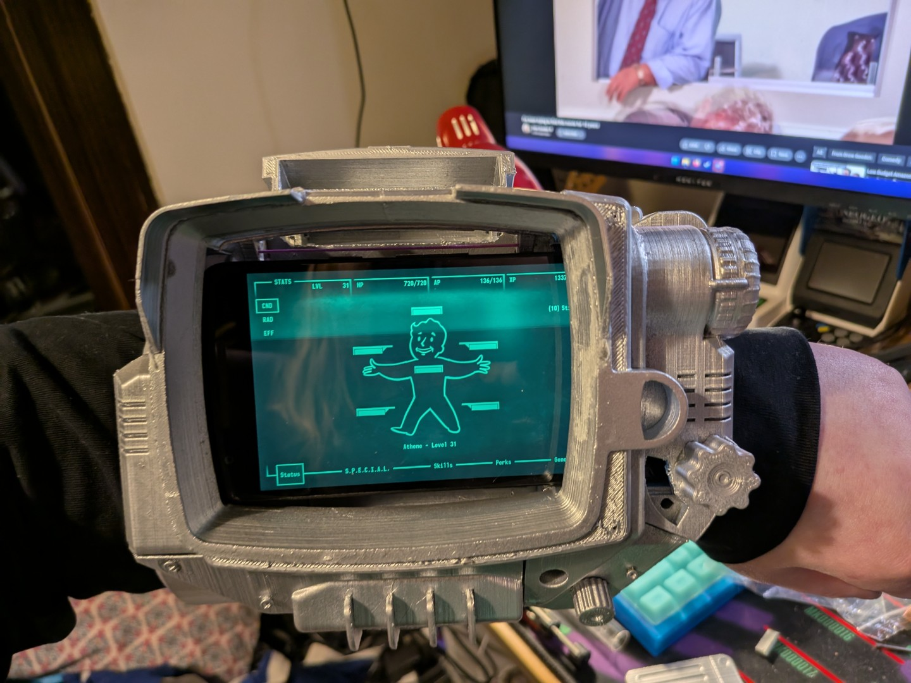{kind=link}
It's also absolutely fucking massive.
Wearing it is deeply uncomfortable and my arms get tired after mere minutes, let alone the hours of continuous wear a con would require. It's impractical.
There is, however, a solution. Bethesda and 'The Wand Company' produce a screen-accurate version of the tv series hero prop, which normally wouldn't particularly interest me, as often screen-accurate props are just display pieces and are non-functional.
Props I use for cosplay need to have flare. I use LEDs to make them nicer, or in the case of my own homebrew pipboy, I was using a phone with an android app that mimics the Fallout 3 pip-boy interface, fully interactable. That's cool! And it's a showcase!
But luckily this prop also actually works. It features a lot of animations from the tv show, but more to the point, all the dials on it function and are used to interact with it. It's really excellent.
It's expensive, though, and that alone wouldn't have been enough to sway me. That is, until I did a little bit of digging and discovered that the firmware is customisable, supporting custom applications out of the box.
That's basically a red rag to a bull for me. I love writing software for esoteric things. I mean. Look at the projects on this website. Two of them use a midi device and one of them is a plugin for a videogame. I've also written plenty of software for and interfacing with embedded hardware. This is simply made for me!
But if you click through the link at the top there, you'll notice that there's basically nothing in the repository right now. That's because, dear reader, we're gonna be exploring this hardware TOGETHER. IN REAL TIME.
There's a sequence at the start of the social network where zuck liveblogs him making facesmash. A lot of what he writes is despicable, and the concept of facesmash is awful, but I dfo love the idea of liveblogging a project. It's not something I have really done before. So we're gonna do it with this one.
It's a good candidate. There's some documentation at the above link, but not a lot, and there's lots left to explore in terms of how the system works. The author of the above linked article makes an assumption, for example - that the graphics context should be one bit per pixel - but I don't think that's actually the case. There are different tones in the monochrome screen, and it doesn't look like they're made using dithering. So how are they done? That's jsut one of many questions we will explore together.
My ultimate aim here is to put something like the in-game stats screen together. When I was setting up my homemade pip-boy, I put some funny and personaly jokes into what stats and perks I picked - being able to replicate them here would be really nice.
There's a long walk between here and there, though, so strap in.
However, let's get one thing straight here - I'm not a teenager in a university dorm running on monster energy and rage. I'm a 31 year old woman with a full-time job and a bedtime.
So the 'liveblog' will not be me hacking away at this until 4AM, oh no no. I will be working on this off and on over the next few weeks most likely, and keeping this post updated as I go.
I am sure you will agree that this is a much healthier choice.
Beginnings
19/03/2025
OK, so, the device itself. This is a boutique prop with functionality that, while not an afterthought, is certainly not economically worthy of any kind of custom silicon. This is a collector's item, there's only a few thousand of them made, best to use something off the shelf.
And, indeed, it does! An STM32 to be exact, an absolute classic bit of IC hardware. The STM32 series are ARM microcontrollers, architecturally similar to the hardware in your common or garden smartphone. ARM is wonderful because it's somehow managed to succeed in all 3 corners of the 'you can only have two' triangle: it's [relatively] quick, it's cheap, and it's Good. It also sips power relative to bigger, more traditional chips, but that's true of any microcontroller, really, so shouldn't really be counted as a strength here.
I was a smidge surprised to see an ARM chip in this - if this were a homebrew project you'd expect probably an arduino, an RP2040 or maybe a teensy - but this thing does have some relatively complex graphics to drive.
I imagine the main reason this was chosen, however, was hardware video decoding capability. Most (maybe all?) of the show-derived animations are video files on-disk that are just decoded and straight to the graphics context. You can argue this is cheating if you want but to me it reeks of sensible design. Instead of requiring the programmers to design and animate elegantly in a very inelegant context (we'll get to that, believe me), you get the raw files made for the show, re-encode them, and plonk them on. Easy!
Additionally, the raw power the STM32 chip here has allows for a less conventional (but friendlier-ish) development context. This chip uses Espruino.
Espruino is javascript for microcontrollers. Some of you may have just hissed, and you'd be right to. Javascript is, pretty infamously, horrible. It's heavy and unwieldy, it's untyped, it's messy, it's functional-but-not-quite. If you want an example of how not to design a programming language, you need look no further than javascript. Yet because it runs in-browser, it is the most common language in the world. Go figure.
Some of the words in that paragraph may have you convinced that javascript is a bad fit for the lean, high-performance world of microcontrollers, and really, you'd be right. But that hasn't stopped the most insane people alive, javascript monodevelopers, from crowbarring it into them anyway. And so: Espruino.
Cards on table, I've never used Espruino before today. I've touched basically every other microcontroller going, and everything else uses C++. I'm not a great C++ programmer, but I can get by.
Comparative to my javascript, I might as well be the Bach of C++. I do not like promises, I think throwing all your code to 'some indeterminate point in the future' is a horrendous choice, but it's what we have to work with here, so we go with it.
The thing is though, in this case, this is actually a fairly massive strength. Because Espruino is a JS interpreter, it will run any valid JS you throw at it. This means you can actually program it interactively from a serial connection, which is pretty snazzy. Here's me throwing some debug code at it purely from the terminal and seeing it display the results in real time.
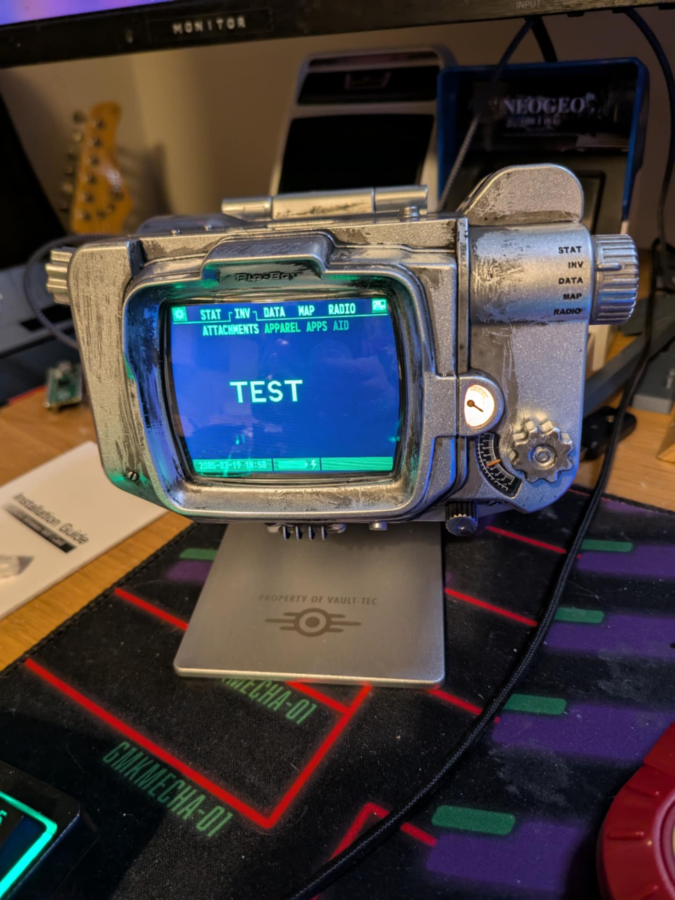{kind=link}
It also means we can dump the firmware with one line from the terminal and, instead of being binary and unreadable, it's in regular-ass javascript. Holy shit!
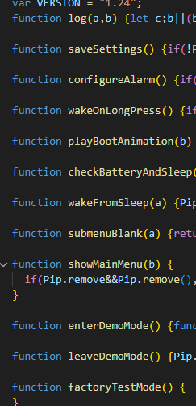{kind=link}
As mentioned, the guy in the link above has already done this to some extent, but I want to dig through a bit further and understand a bit more what's going on. There's some very interesting functions here that I wanna figure out.
For legal reasons, I can't share this firmware wholesale in the repo, so you won't be able to see precisely what I'm talking about. As we go, however, I'll screenshot various parts of the code so you, reader, have context. Like the above!
Anyway, I think that's where I'm leaving it for tonight. It's 11pm, after all. More tomorrow.
Let's get some images displayed
20/03/2025
OK, it's 6pm, there's 3 hours until the Apprentice is on, let's get hacking. The first thing I need to do is, uh... take the thing apart.
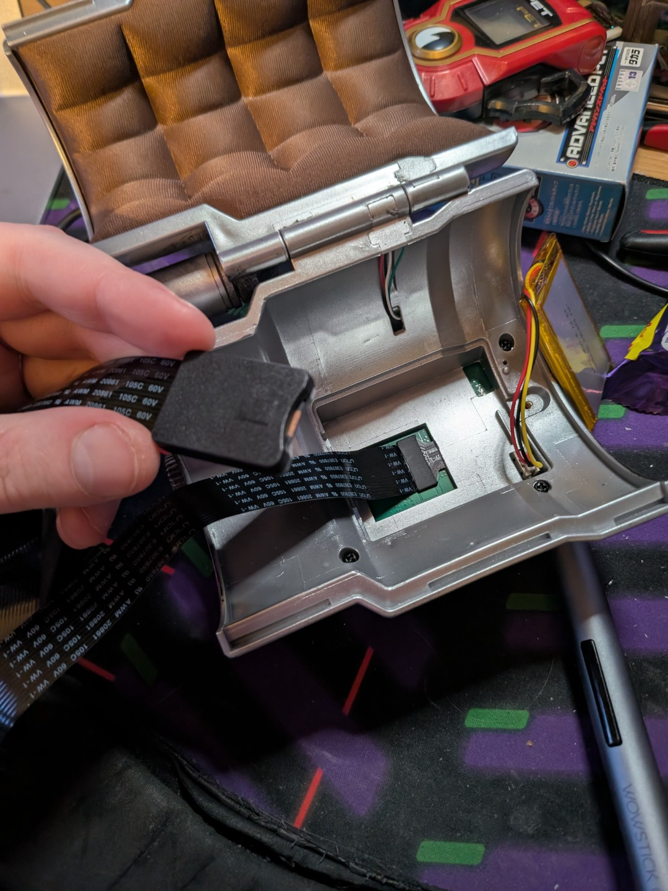{kind=link}
That's an micro-sd extender cable stringing out of it, there. Nearly everything that makes up the pip-boy is stored on an sd card which is, conveniently, not bolted into the board.
You can open up the thing and take it out, you can copy all of its files over to a folder and, most usefully for us, you can copy those same files over to another, bigger sd card (the one installed is only 250MB) and it works, as long as the card is fat32 formatted.
I've put a 32GB one in there, which is overkill, but I had it lying around. It also means I can put the entirety of the FO3/4/NV soundtracks on there, if I want. Which, maybe, I do in future! Who knows.
More importantly, however, that SD card has a USER/ folder where we can drop our own custom javascript files and it'll display them in a nice 'APPS' menu in the INV menu.
We're gonna start with the the helloWorld and graphicsTest files that are currently in the repo. Some file wiggling and inserting and removal of SD cards and bang, there they are!
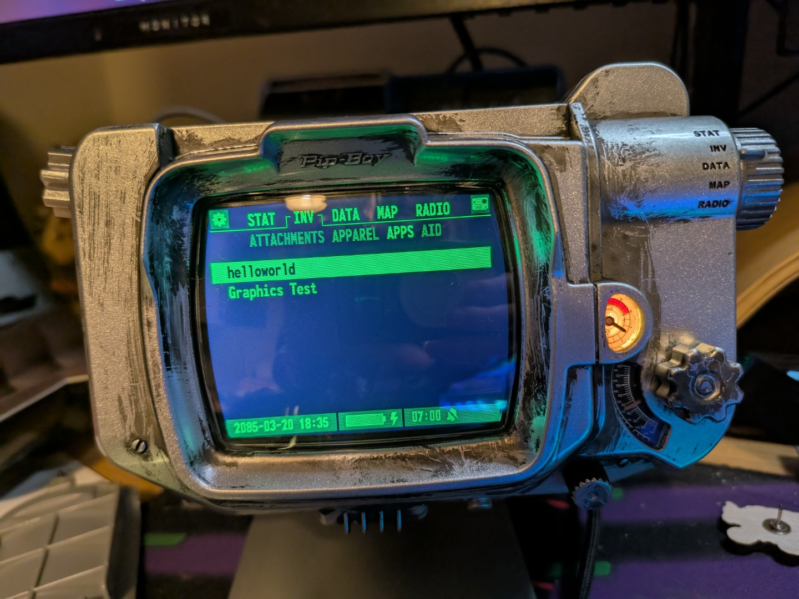{kind=link}
So we want tio draw something to screen that isn't just text, next. So I need to dive into some docs. More updates in a bit...
Code Updated. Check the github link to keep up.OK, first thing I want to do is draw a square. Which means we need to understand how the graphics buffer is working. See, right here, in the dump of the buffer of the main portion of the screen, is some interesting evidence.
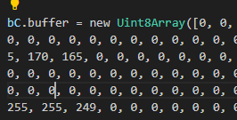{kind=link}
The interesting thing here is 'UInt8.' This is an array of 8bit integers. This could mean the pixels are rendered as 3-byte RGB values, with the r and b just ignored, or it could mean each bit in the byte is a pixel, and the different tones is achieved using dithering. Right now, I'm not sure!
So, to find out, we're gonna draw three squares.
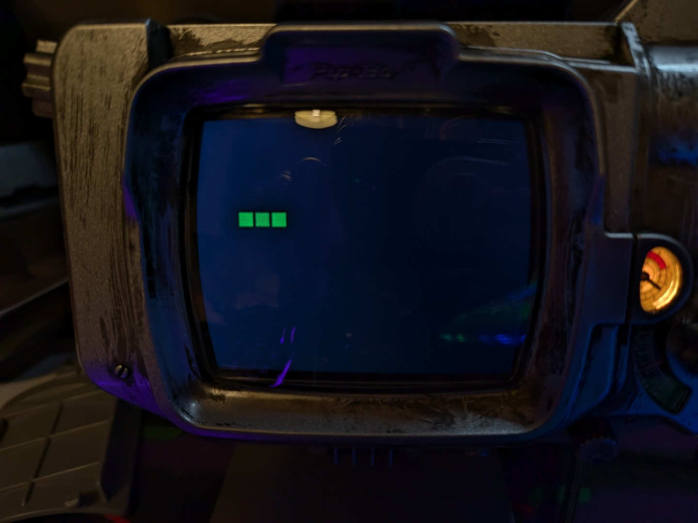{kind=link}
And there we have it! Three squares. Now if we look at the code I've written, and note that the middle square is the dimmest of the three, we can deduce...
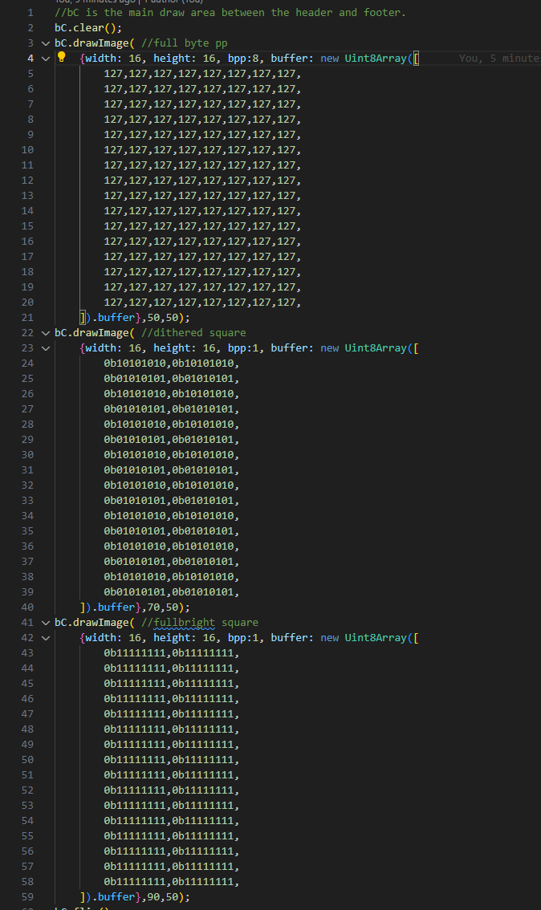{kind=link}
That I was completely wrong and the screen is compeltely monochrome, and any dimming is done by dithering. I'm so glad I'm liveblogging this so everyone can see how stupid I am.
That's ok though! We're here to learn, and this actually makes things relatively nice and easy. I'm sure there are monochrome image -> uint arrays somewhere out there one the web already, thisn is a very common format on embedded platforms, so I just need to find one and run the icons for various perks etc through them, and we can get one displaying.
In fact, maybe that's what we do next. BRB...
Code Updated. Check the github link to keep up.Excellent, here's one, first hit on google. image2cpp Let's run the Cherchez La Femme image through it and upload it to the machine aaaand...
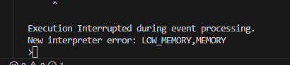{kind=link}
So, that's not good. In fairness, I am loading a 167x167 bitmap into memory here, I suppose it makes sense that that wouldn't exactly work. But it is going to make this more difficult.
Next question then. What is a reasonable maximum array size we can use here? Time to experiment. We'll start with half the resolution, 83x83.
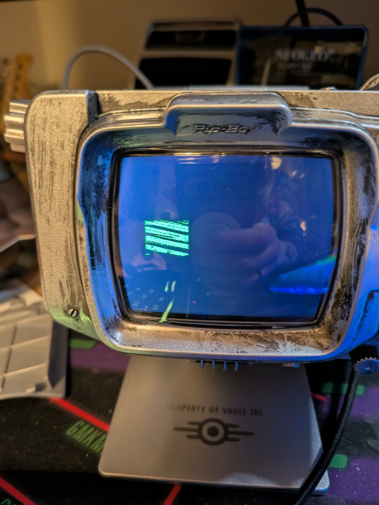{kind=link}
OK, it's displaying, but that's clearly not right. Here's what it's supposed to look like:
{kind=link}
That's ok though, there's options on the converter for just this predicament. This was the default (Horizontal - 1bpp), and Vertical - 1bpp landed similar results, so let's move on from that converter and use the one hosted on Espruino's website instead. Man I'm really proving myself soooo smart today.
Using the right tool for the job gives us this! And it's even full resolution! Huzzah!
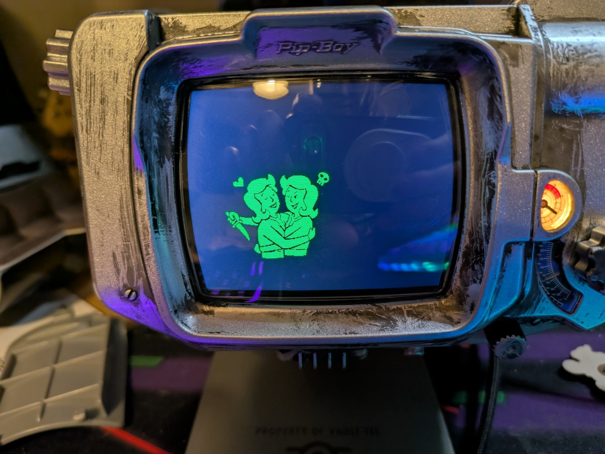{kind=link}
OK, that's real, genuine progress. We can encode images and display them, which we need for the perks screen. They are pretty big though, so I think next order of business is going to be keeping those strings in text files and loading them in when we need to. Back to the docs... Although I might leave it there tonight, my back hurts. No wonder Zuck had to be 19 to do this live.
Loading from files
21/03/2025
Evening! Let's get right back to work.
Yesterday, we figured out how to correctly convert and display an image on the screen. Today,we're going to figure out storing those images, loading them at runtime, and switching to another image later.
So, first up: storing and loading the image. This is gonna need me to look up how the espruino fs library works. BRB...
Code Updated. Check the github link to keep up. 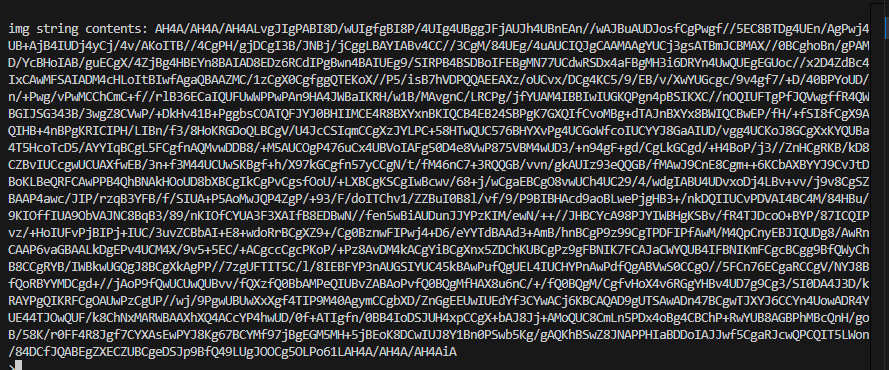{kind=link}
Well that was tremendously easy. First try baby, finally I'm not completely stupid about something! We're gaming! I would take a photo of the screen but I didn't change the image's position so it looks exactly the same. but rest assured it is there!
OK, next up, we swap images on the fly.
Code Updated. Check the github link to keep up.Done! Again! Wow we're going win after win today. Apart from the weird bit of artifacting in the top left of the image there, but, er... I'm sure that's fine. Let's ignore it for now. We'll see if it continues with other images.
OK, so this is actually a fair cut through the work we need to do here. So let's structure the screen a bit, and add the name and descriptions.
Code Updated. Check the github link to keep up.Hoooo boy I spent a while here huh! So much for 'live' blogging.
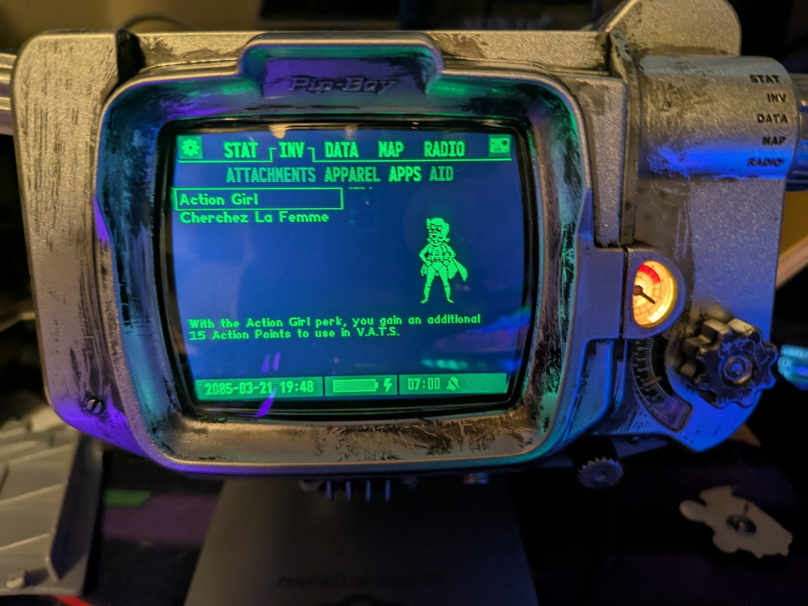{kind=link}
While I've been gone I basically drew the rest of the fucking owl. Look! It's the screen from the game! Pretty much completely!
There's some artistic license; in-game the perk description displays in the same column as the image, but the available area there is too small to display it readably on screen, so I've bannered it at the bottom instead.
But yeah, we've got the basics of the screen here! The list of perks, the box around the selected one, the image, the description. They're all loaded dynamically from the list of files on the SD card, and I've just gone in and tested the reselection with a timeout, and hot damn, it works.
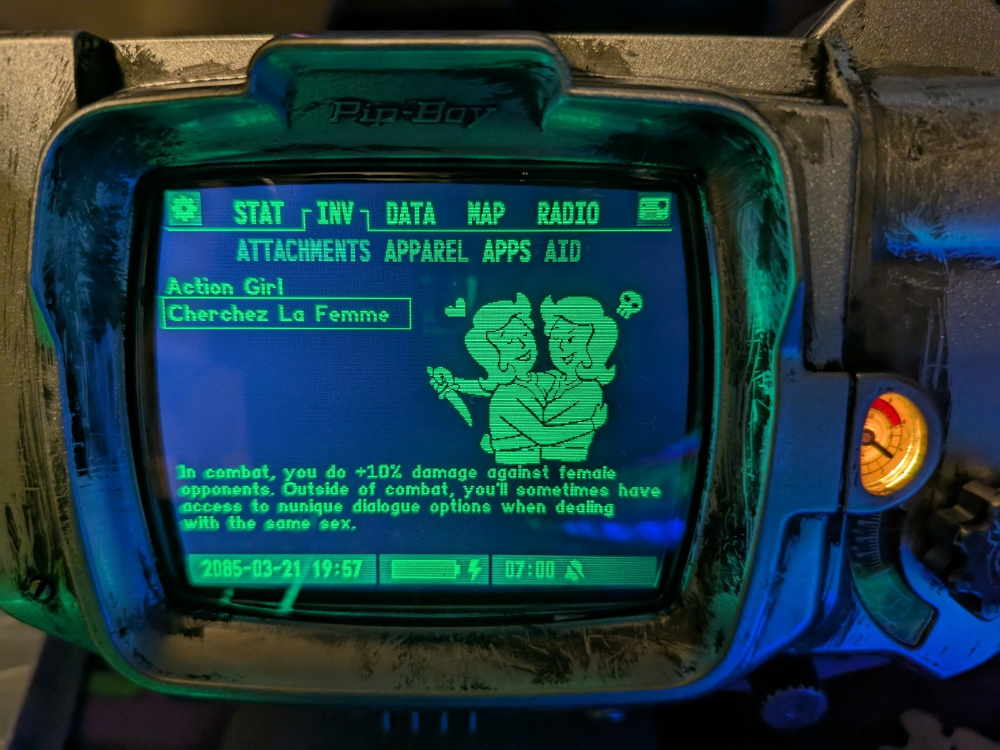{kind=link}
Additionally, if you're code digging, you'll see I've done a bunch of reorganisation. While I was hacking before, I've gone in and refactored and made all of this actually functionally useful for building up the application proper.
Next thing, then, is input. Which hopefully, shouldn't be too bad? I'll tackle that at some point over the weekend. Then it's just filling the rest of the perk data (and fixing whatever is wrong with the action girl image) and presto, that's a screen!
Code Updated. Check the github link to keep up.OK I lied did a tiny bit more tonight. It's some housekeeping code - I wanted to make sure the images displayed centrally if they were cropped to just their actual data, any rows of empty pixels around them removed.
This turned out to be a smart decision - It saves space, it looks nice, and it meant I redid the action girl icon with its bit of corrupted data, a bug I would have otherwise inevtiably ignored until the end. No photos right now because not much has actually changed but it's good and sets us up for just implementing the manual selection now.
Chasing accuracy
22/03/2025
Good morning! I'm up bright and early to continue my vital work.
Actually, I've already started. I looked up what the perk menu looks like in Fallout 4 to check if there a) is one other than the chart (there is) and b) if what I'm making is accurate to that.
And it mostly is, but the selection box around the perk in the list is actually all green and the text is black, see the below image.
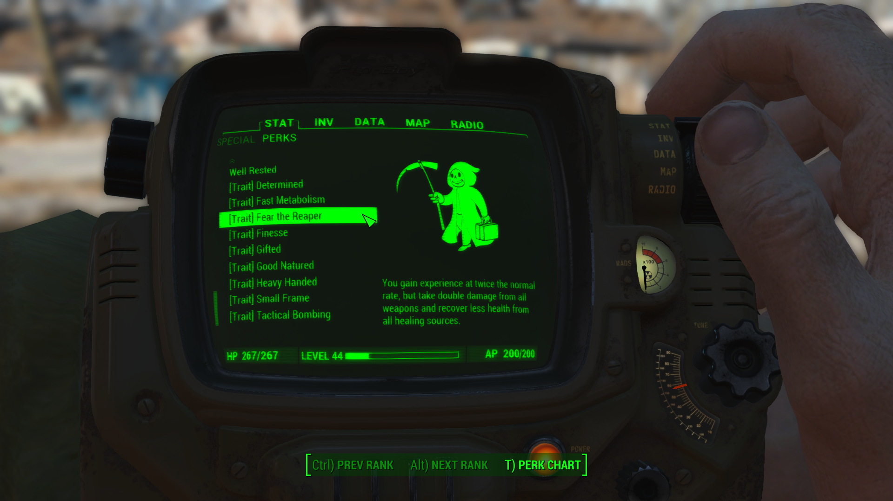{kind=link}
So I kinda want to recreate that. Doing so would be useful as it'll also bring my selection menu in line with some of the official submenus on the device as well, making the app look more official :)
This is what I've got so far - I couldn't get the text to draw in black so I settled on a halftone selection box instead. I'm still not completely happy with it though and want to get as close to accurate as I can, so I'm going to dive into the firmware and see if I can divine how it does the black on white.
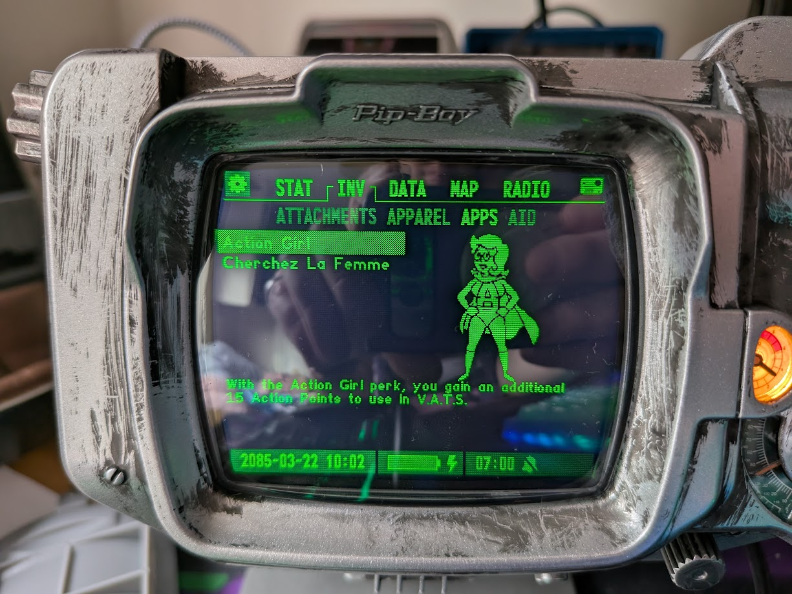 Code Updated. Check the github link to keep up.{kind=link}
Ooookay, a lot has happened since I said I'd check the firmware. Here's the current state of the screen:
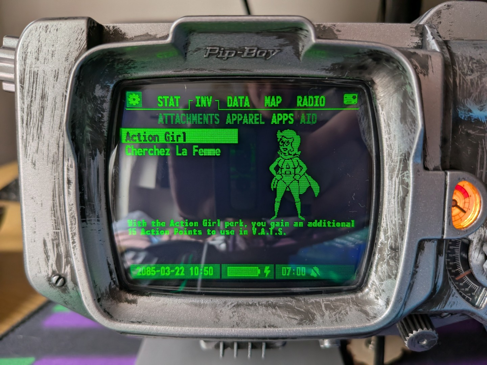{kind=link}
So, like I said, I dove into the firmware code. I found quite a lot of interesting stuff in there while trying to figure out how they did the black on white textbox. Let's run through.
Top of the order - there are three foreground colours the pipboy can draw in, 0-3. These are actually different brightnesses of the pixels. So drawing a fullbright pixel is colour 3, an off pixel is colour 0, but there's also colours 1 and 2 which are slightly dimmer on colours!
This is how the fading 'Attachment' and 'Aid' labels at the top are drawn, although it's not very clear in the photos I've taken.
I actually discovered this by accident - I saw a setColor(0) in the firmware and deduced that was black, so then I added that in to my drawing code - but in so doing I also set the colour of everything not black to setColor(1), which made everything dimmer.
This was a bit of a eureka moment - I'd figured out that there were roughly 4 colours displayed on screen but earlier assumed this was all dithering after my experiments a few days ago. Turns out I was right all along! Ha-HA!
So, using this new knowledge, I've added correct coloring to everything. I've also chosen to dim the perk image a shade and I think it makes it look really good. The full brightness was overpowering some of the details of the icons.
While digging, I also found an interesting function call: setFontMonofonto18(). This was a call on the graphgics context and was pretty self-explanatory.
The thing is, I'd noticed my fonts were a bit off. They weren't as tall as they should have been. Turns out, that's because there's a custom font in use, but only when you specifically set it. So because I was just using setFontVector() instead of these Monofonto calls, the font was getting set back to the default Espruino vector font.
Ctrl-F-ing 'Monofonto' in the firmware dump showed up a few similar calls, listed here for convenience:
- setFontMonofonto16
- setFontMonofonto18
- setFontMonofonto23
- setFontMonofonto28
- setFontMonofonto96
- setFontMonofonto120
I assumed Monofonto was the font name, and tried to plug it in to a few of the Espruino font functions, but got errors each time, which was troubling. Giving it a quick duckduckgo presented an excellent result: DaFont Monofonto. Turns out the font used on the pip-boy (and presumably in the actual game!) is freely available to download. Perfect!
With that in hand, I looked at the Espruino setCustomFont call, and with a smidge more docs digging I found this page that converts a font and size into a graphics context function call - just like the ones already in the firmware!
This was perfect. I plugged in the font and set size to 14, dropped the code in my file, and now my description is in the correct font. I used the pre-existing setFontMonofonto18 for the Title - 16 was proving a little too small, and other menus in the device are size 18.
I'm honestly over the moon about this. I had kind of already settled for things not looking quite right, but with a bit of digging, I solved basically all the imparities with the games.
What that isn't, though, is input. Which was the title of this update (I've changed it now). So I'll tackle that next!
Actually doing input this time
22/03/2025
OK we're back again baby. And this time I sweart I am going to do input. To show willing I've even already started diving into the firmware to work out how it's done!
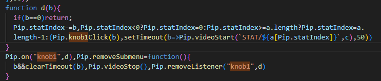{kind=link}
So that firmware screenshot tells us all we need to know, really. The Pip object has some events (in this case, 'knob1', which is a) funny and b) the left hand wheel control) one which you can register functions to call.
This screenshot is from the portion of the code that handles switching between the different health animations, but this applies anywhere really. So what we need to do is:
- Create a listener and register it
- Make sure we play the knob click audio like the rest of the device does
- Move our selection up and down the list with each click
Pretty simple! OK, lets go do that.